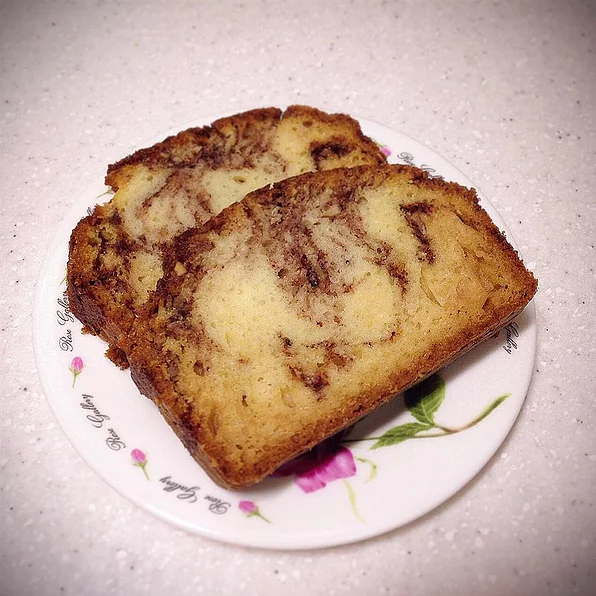

Cinnamon Swirl Bread

You want bread thats good, delicous and not been sitting in a store for an unknown period of time the try this cinnamon swirl bread.
ingerdients
- ⅓ cup white sugar
- 2 teaspoons ground cinnamon
- 2 cups all-purpose flour
- 1 tablespoon baking powder
- ½ teaspoon salt
- 1 cup white sugar
- 1 egg, beaten
- 1 cup milk
- ⅓ cup vegetable oil
Directions
- Preheat oven to 350 degrees F (175 degrees C). Lightly grease a 9x5 inch loaf pan. In a small bowl, mix together 1/3 cup sugar and 2 teaspoons cinnamon; set aside.
- In large bowl combine flour, baking powder, salt and remaining 1 cup sugar. Combine egg, milk, and oil; add to flour mixture. Stir until just moistened.
- Pour half of the batter into pan. Sprinkle with half the reserved cinnamon/sugar mixture. Repeat with remaining batter and cinnamon/sugar mixture. Draw a knife through batter to marble.
- Bake in preheated oven for 45 to 50 minutes, or until a toothpick inserted into center of the loaf comes out clean. Let cool in pan for 10 minutes before removing to a wire rack to cool completely. Wrap in foil and let sit overnight before slicing.
Return to home